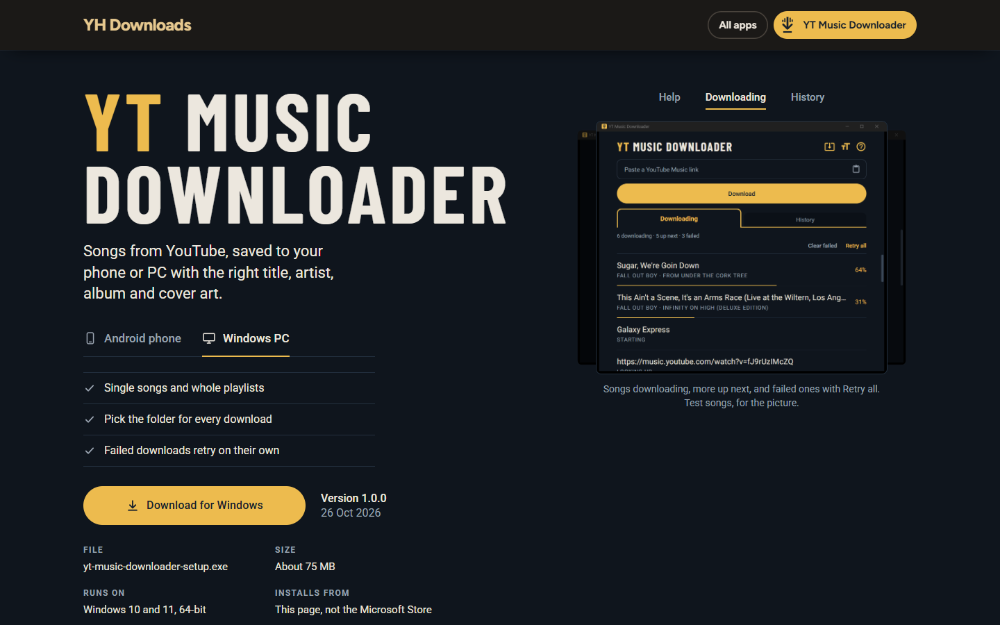
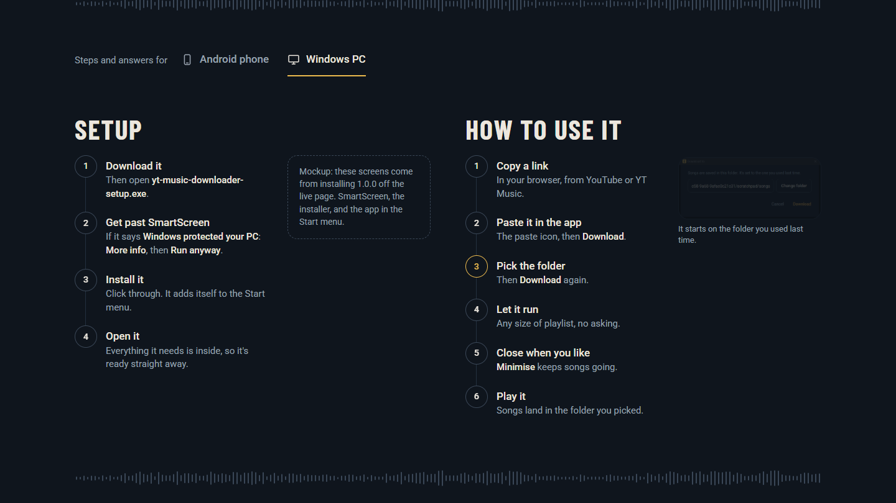
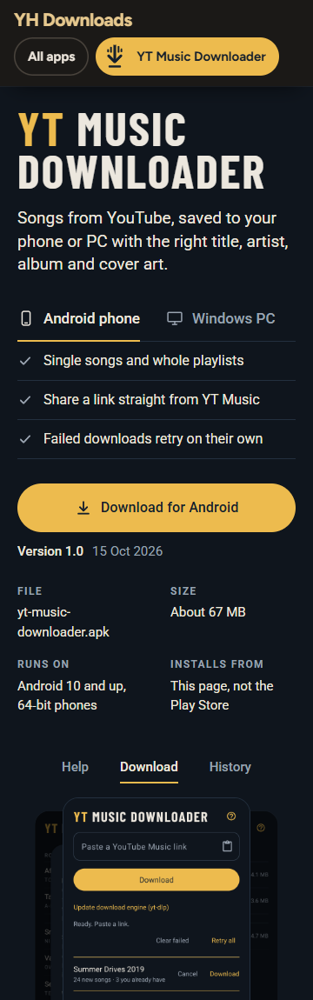
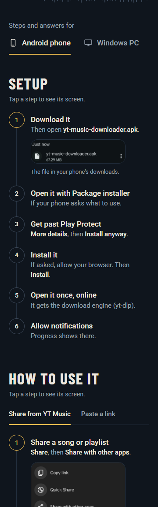
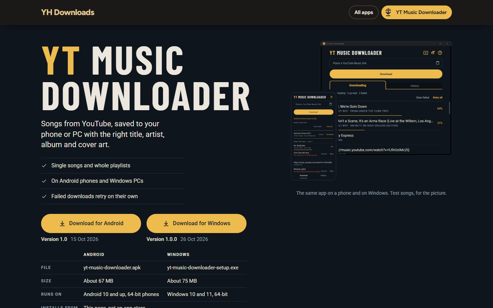
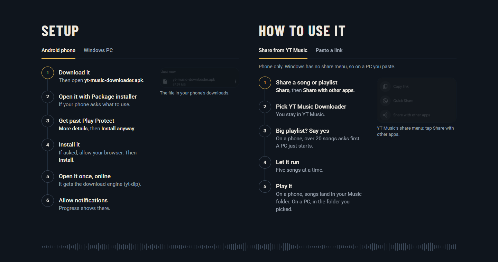
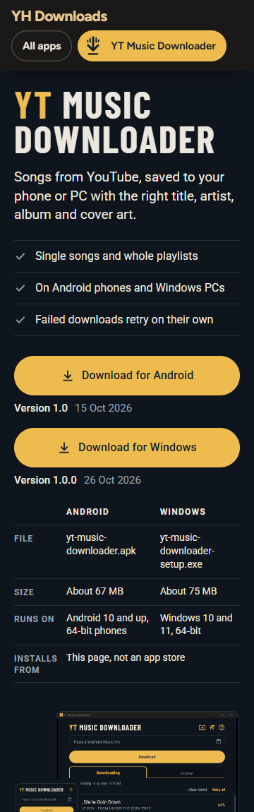
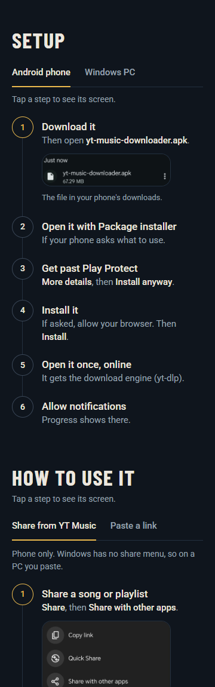

Both use the same real content and the live page's look. The Windows screens are the desktop app's review shots from 25 Oct. The Windows install has no screenshots yet, so Setup shows a dashed note there.
An Android phone / Windows PC switch under the line, and everything below follows it: facts, button, file details, screens, Setup, How to use it, What it's for, FAQ. A Windows PC opens on Windows, everyone else on Android. The switch shows again where the details start.




One page for both. Two download buttons, each with its version, and one table of both files. Wording covers both, like "On a phone… On a PC…". Only Setup has its own Android / Windows switch, cause its steps are different all the way through.



